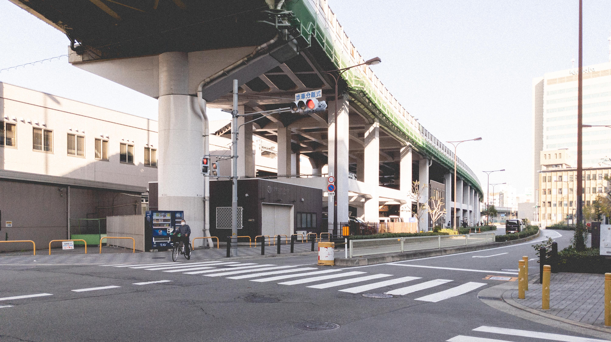
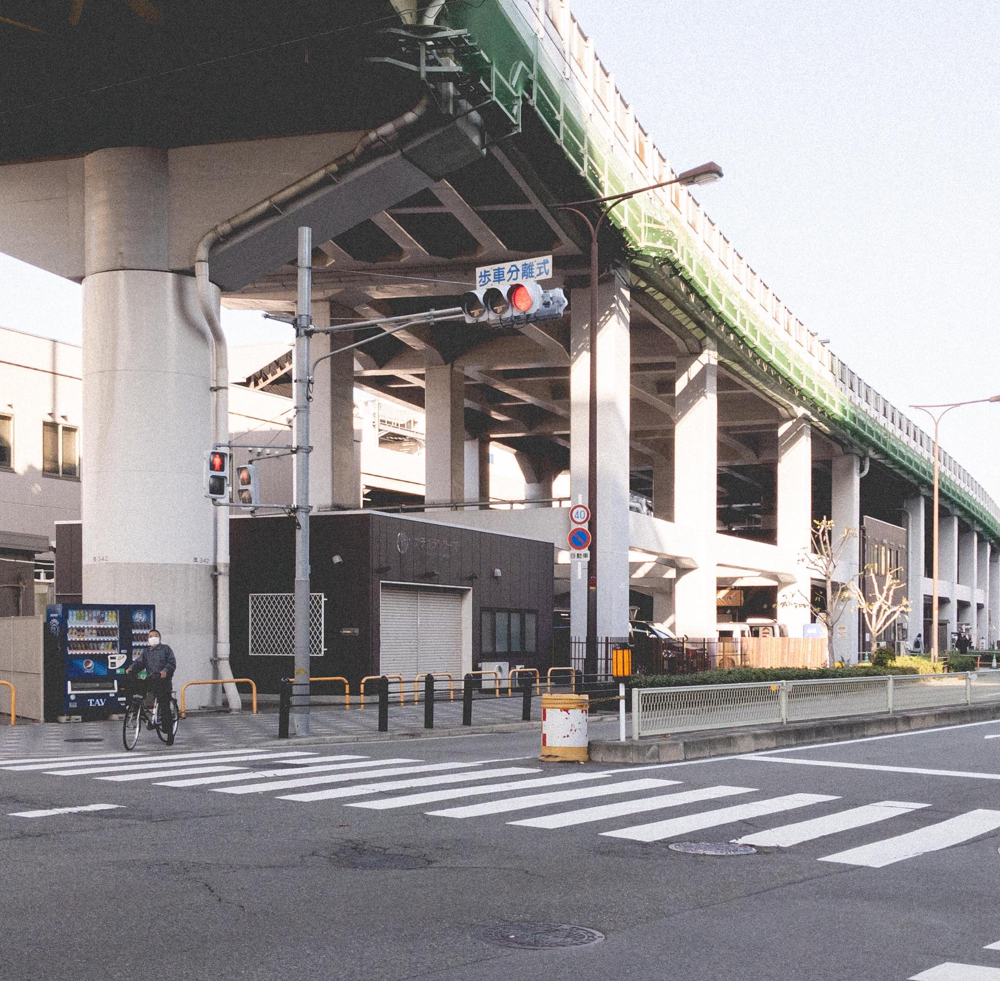
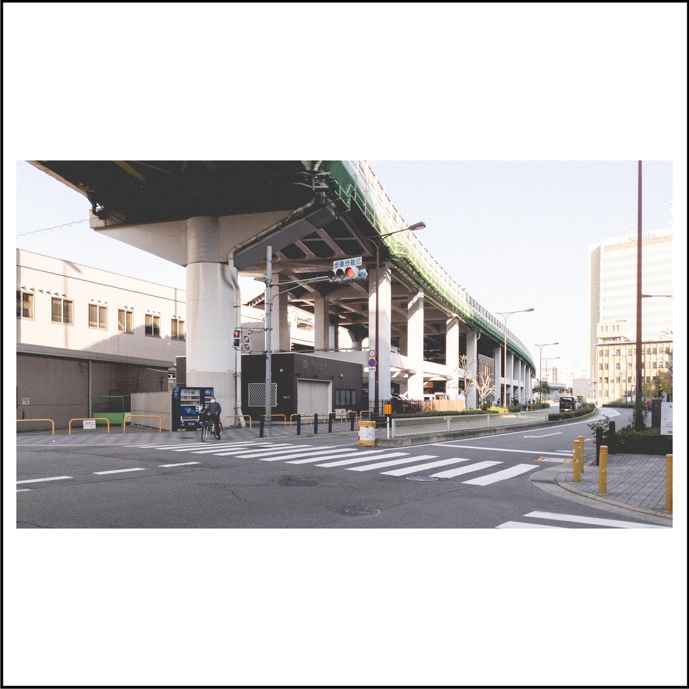

Automation magic with Imagemagick
I enjoy photography and my Instagram profile serves as my online image gallery which I use to share stories about my trips.
My photography style tends towards a film look and shots are always captured in the 16:9 aspect ratio. However if you have ever used Instagram, you will notice that the profile page displays images in 1:1 aspect ratio.
That means any taller or wider image will be cropped when displayed on the profile, which isn’t really the gallery look I am going for.
One way to go around this restriction is to resize the 16:9 image till it fits within the 1:1 square (added a black outline to make it visible in case you are reading this with white background on).
I usually do this using an Android app called Instasize. While it works well, there’s no batch edit option. When I have hundreds of photo to edit, this process can become very time-consuming.
Then I discovered a tool called ImageMagick, a free open-source software equipped with a wide range of tools for image editing.
With a single command, I managed to achieve the same result.
magick convert -bordercolor white -border 100 -gravity center -resize 1200x1200 -extent 1200x1200 ./input.jpeg ./output.jpeg
Now with some simple automation using Bash to loop over a directory of images and we got ourselves a massive time saver right here.
Example script: https://github.com/jaanhio/imagemagick-magic/blob/main/convert.sh